简单而言，就是线条沿着不规则路径的行进动画，其中的线条动画可以理解为是特殊的光效。
本文，我们将一起探索，看看在不使用 JavaScript/Canvas 的基础上，使用纯 CSS/SVG 的方式，我们可以如何大致的还原上述的线条动画效果。
谈到线条动画，尤其是不规则路径或者是复杂路径，我们第一时间应该想到的就是 SVG 中的 stroke-dasharray 和 stroke-dashoffset。
这两个属性，我们在多篇文章中都有提及，也是非常有意思的线条动画效果，感兴趣的可以一并拓展阅读：
首先，也是最为重要的，上面的路径动画的路径，本质上是多段线段。而使用 SVG 可以非常轻松多端线段效果，像是这样：
<svg height="100%" width="100%">
xmlns="http://www.w3.org/2000/svg">
<polyline
points="240 10 140 10 140 90 0 90"
stroke="#ddd"
fill="transparent"
stroke-width="2"
/>
</svg>
这样，我们就能得到这样一个多段线段：
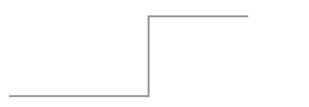接下来，我们就可以利用 stroke-dasharray 来实现多种不同的虚线样式。
利用与上面同样路径的 polyline，我们来实现一个虚线版本：
<svg height="100%" width="100%">
xmlns="http://www.w3.org/2000/svg">
<polyline
class="g-dashed-line"
points="240 10 140 10 140 90 0 90"
fill="transparent"
stroke-width="2"
/>
</svg>
.g-dashed-line {
stroke: #fc0;
stroke-dasharray: 20, 20;
}
就可以得到这么一个图形：
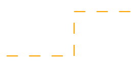当然，这里可能有人不太了解 stroke-dasharray，简单说明一下。
在 CSS 中可以利用 dashed 关键字实现虚线边框。但是，每段虚线的长度、每段虚线线段的长度是无法控制的，在 SVG 中利用 stroke-dasharray 就可以进行控制。
再看一个简单的 DEMO：
<svg xmlns="http://www.w3.org/2000/svg">
<rect class="rect rect1" />
</svg>
<svg xmlns="http://www.w3.org/2000/svg">
<rect class="rect rect2" />
</svg>
<svg xmlns="http://www.w3.org/2000/svg">
<rect class="rect rect3" />
</svg>
svg {
width: 250px;
height: 50px;
margin-bottom: 20px;
}
.rect {
width: 100%;
height: 100%;
stroke: #673ab7;
stroke-width: 2;
fill: transparent;
}
.rect1 {
stroke-dasharray: 10 10;
}
.rect2 {
stroke-dasharray: 30 30;
}
.rect3 {
stroke-dasharray: 50 20;
}
这样，我们就能得到不同的虚线边框样式：
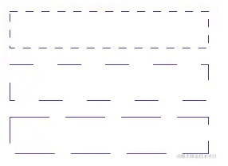取其中一个，一看就懂：
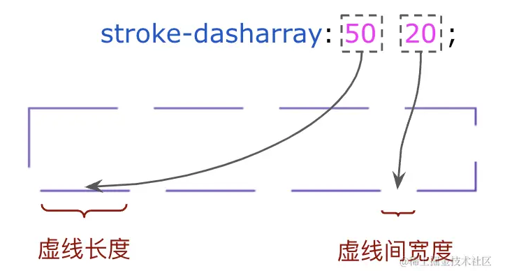此时，我们把上面两条 SVG 线段叠加在一起，就是这么个效果：
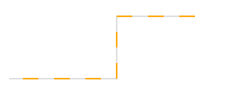我们只需要再调整一下 stroke-dasharray，让图形中只出现一段小段的边框即可：
.g-dashed-line {
stroke: #fc0;
stroke-dasharray: 40, 320;
}
效果如下：
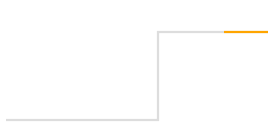最后，我们再借助 stroke-dashoffset 实现动画效果。
那么，什么又是 stroke-dashoffset 呢？
默认情况下，虚线的起点位于路径的起点处，但是通过改变 stroke-dashoffset 值，可以让虚线从路径的其他位置开始绘制。
也看一个简单的例子：
.rect1 {
stroke-dasharray: 10 20 30 40 50 60;
stroke-dashoffset: 0;
}
.rect2 {
stroke-dasharray: 10 20 30 40 50 60;
stroke-dashoffset: 20px;
}
.rect3 {
stroke-dasharray: 10 20 30 40 50 60;
stroke-dashoffset: 40px;
}
在上面，我们的 stroke-dasharray 是一致的，10 20 30 40 50 60 表示边框和间隔按照 10px 20px 30px 40px 50px 60px 的规律进行，不断循环，只有 stroke-dashoffset 不一致，分别是 0、20px 和 40px。效果如下：
仔细看 3 个图形，边框形状是一致的，就是边框的起点不一样，而这，就是 stroke-dashoffset 的作用：
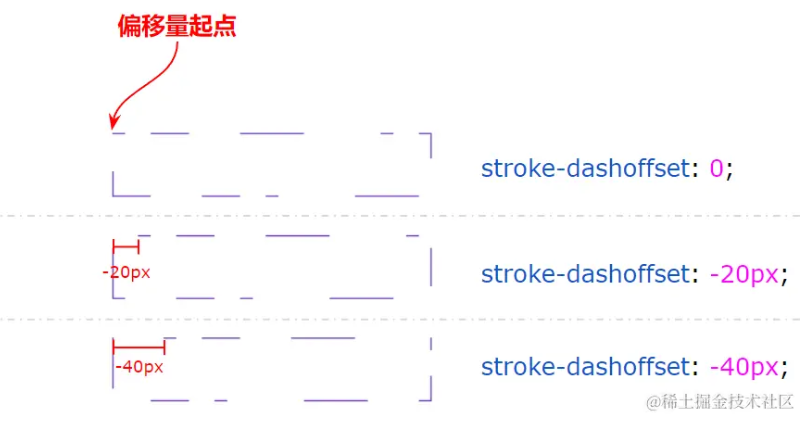言归正传，此时，我们基于 stroke-dashoffset 设置动画即可，完整的代码如下：
<div class="g-svg">
<svg height="100%" width="100%">
xmlns="http://www.w3.org/2000/svg">
<polyline
points="240 10 140 10 140 90 0 90"
stroke="#ddd"
fill="transparent"
stroke-width="2"
/>
<polyline
class="g-dashed-line"
points="240 10 140 10 140 90 0 90"
fill="transparent"
stroke-width="2"
/>
</svg>
</div>
.g-svg {
width: 240px;
height: 100px;
.g-dashed-line {
stroke: #fc0;
stroke-dasharray: 40, 320;
stroke-dashoffset: 0;
animation: move 2.4s infinite linear;
}
}
@keyframes move {
0% {
stroke-dashoffset: 0;
}
100% {
stroke-dashoffset: -320;
}
}
这里，我们其实只是控制了 .g-dashed-line 这个 SVG 图形的虚线的 offset 偏移距离，视觉上形成了路径动画效果：
当然，这个方案的最大的问题在于，基于 stroke-dasharray 实现的边框线条，只能是一种颜色值，因此，我们无法实现渐变色的线条效果。
不过，我们倒是可以另辟蹊径，譬如，通过 filter: drop-shadow()给整个线条添加上阴影：
或者，通过再叠加一层线条动画，只给线条的头部，添加上阴影效果：
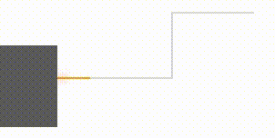完整的代码，你可以戳这里：CodePen Demo -- Line Animation Effect
当然，如果我们就是想要渐变彩色的线条动画效果，譬如这样，那该怎么办呢：
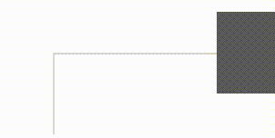CSS 能实现吗？当然可以。
在很久之前的一篇文章 -- CSS 奇思妙想边框动画 中，我们介绍了一种非常有意思的边框效果：
效果图和示意图如下，旋转一个部分角向渐变的图形，中间的部分使用另外一个伪元素进行遮罩（或者也可以使用 mask 进行裁剪），只漏出线条部分即可：
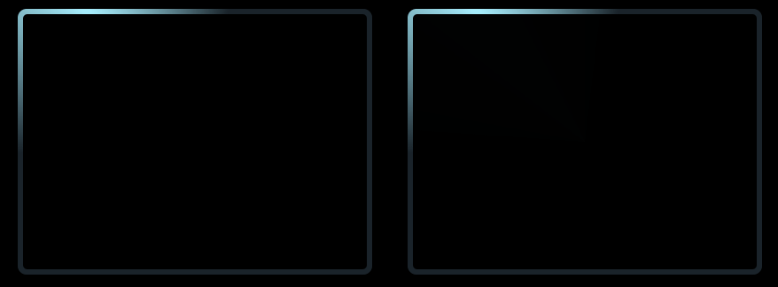完整的代码，可以看这里：CodePen Demo -- Rotating border 3
看，这里不就是渐变色的线条动画效果么？
当然，可能有同学还会有疑问，我们再放另外一个示意图，一看就懂。
首先，利用角向渐变实现这样一个背景：
div {
position: relative;
&::after {
content: "";
position: absolute;
left: -50%;
top: -50%;
width: 200%;
height: 200%;
/*
1. conic-gradient 创建一个圆锥形的颜色渐变，从中心点开始，围绕中心点旋转，像钟表指针那样。
2. 这段代码创建了一个由4种颜色组成的圆形饼图效果：
- #399953（绿色）: 从0°到25%（0°-90°）
- #fbb300（黄色）: 从25%到50%（90°-180°）
- #d53e33（红色）: 从50%到75%（180°-270°）
- #377af5（蓝色）: 从75%到100%（270°-360°）
*/
background: conic-gradient(
#399953,
#399953 25%,
#fbb300 25%,
#fbb300 50%,
#d53e33 50%,
#d53e33 75%,
#377af5 75%,
#377af5
);
}
}
注意，这里运用了元素的伪元素生成的这个图形，并且，宽高都是父元素的 200%，超出则 overflow: hidden。
接下来，给它加上旋转：
div {
&::after {
animation: rotate 4s linear infinite;
}
}
@keyframes rotate {
100% {
transform: rotate(1turn);
}
}
看看效果：
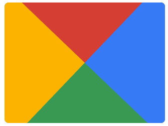最后，再利用 mask，将中间区域进行裁剪：
div {
mask: linear-gradient(
#000,
#000 3px,
transparent 3px,
transparent calc(100% - 3px),
#000 calc(100% - 3px),
#000
), linear-gradient(90deg, #000, #000 3px, transparent 3px, transparent, transparent
calc(100% - 3px), #000 calc(100% - 3px), #000);
}
这样，一个 Nice 的边框动画就出来了
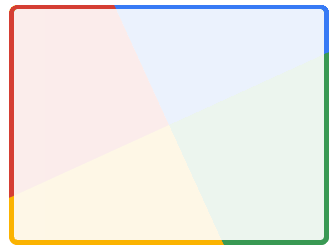在理解了上述的基本技巧之后，我们可以再对渐变的颜色做一些调整，我们将 4 种颜色变成 1 种颜色：
div::after {
content: "";
position: absolute;
left: -50%;
top: -50%;
width: 200%;
height: 200%;
background: conic-gradient(
#399953,
#399953 25%,
transparent 25%,
transparent
);
}
得到这样一个图形：
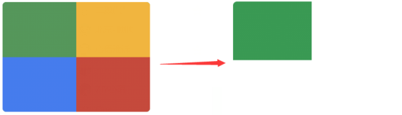同样的，让它旋转一起，一个单色追逐的边框动画就出来了：
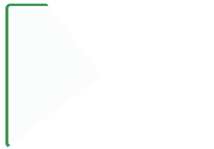好，最后，我们把这个纯色替换渐变色，再给父元素加一个底色，完整的代码：
div {
position: relative;
width: 300px;
height: 240px;
background: #ddd;
overflow: hidden;
mask: linear-gradient(
#000,
#000 3px,
transparent 3px,
transparent calc(100% - 3px),
#000 calc(100% - 3px),
#000
), linear-gradient(90deg, #000, #000 3px, transparent 3px, transparent, transparent
calc(100% - 3px), #000 calc(100% - 3px), #000);
&::after {
content: "";
position: absolute;
left: -50%;
top: -50%;
width: 200%;
height: 200%;
background: conic-gradient(#fc0, #ff5722 25%, transparent 25%, transparent);
animation: rotate 4s linear infinite;
}
}
@keyframes rotate {
100% {
transform: rotate(1turn);
}
}
这样，我们就得到了一个酷炫的渐变色线条边框动画：
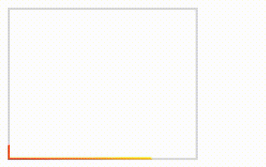完整的代码，你可以戳这里：CodePen Demo -- Gradient Line Animation
仔细看这个图形，如果只取其中斜对角的一半，不就是我们想要的效果了吗？
当然，上述 DEMO 中利用伪元素进行旋转的代码，还可以进行优化。我们可以利用 CSS @Property 变量动画替换整个元素的旋转，从而得到更优雅的代码。如此一来，完整的代码，就变成这样了：
<div class="g-gradient"></div>
@property --angle {
syntax: "<angle>";
inherits: false;
initial-value: 199deg;
}
.g-gradient {
width: 200px;
height: 100px;
background: #ddd;
mask: linear-gradient(#000, #000 2px, transparent 2px, transparent),
linear-gradient(90deg, #000, #000 2px, transparent 2px, transparent);
&::before {
content: "";
position: absolute;
inset: 0;
background: conic-gradient(
from var(--angle),
transparent,
#fc0,
#ff5722 45deg,
transparent 45deg
);
animation: angleChange 2.4s infinite ease-in-out;
}
}
@keyframes angleChange {
0% {
--angle: 199deg;
}
100% {
--angle: 420deg;
}
}
这样，我们就成功的实现了，渐变色的线条动画：
当然，有的时候我们的线段不止两段，可能有多段，也无需担心，在掌握了上述的技巧后， 我们通过动画拼接，也可以很容易的得到多段线段的渐变色线条动画效果：
完整的代码，你可以戳这里：CodePen Demo -- Line Animation Effect
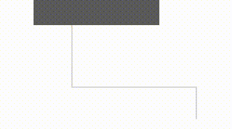